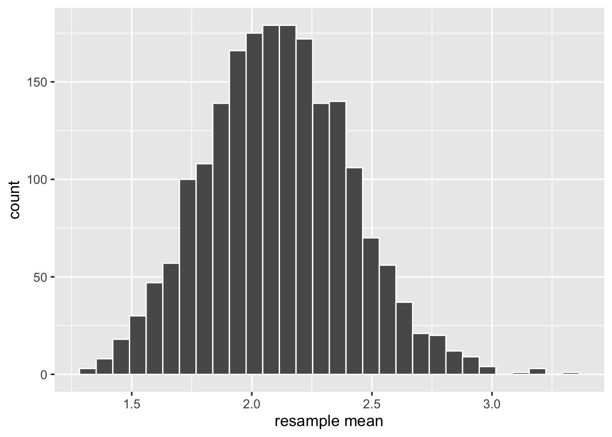

Chapter 12 Bootstrapping and Confidence Intervals
Instructions
- In this two-hour lab we will go through worked examples in the first hour, and you will attempt to answer some questions in the second hour.
- The Rmarkdown file for this week is here.
Learning outcomes
LO1. Understand how bootstrap resampling with replacement can be used to approximate a sampling distribution.
LO2. Understand how the bootstrap distribution can be used to derive a range of highly plausible values (a confidence interval).
Reading
This week’s reading is Chapter 8 of the book by Chester Ismay and Albert Y. Kim. Statistical Inference via Data Science: A ModernDive into R and the Tidyverse. Chapman and Hall/CRC, 2019. Freely available online at: https://moderndive.com/
12.1 Recap
Last week, we learnt about how we can take a statistic from a sample to draw conclusions about a parameter of the population from which the sample is drawn. We then focused on how these sample statistics will vary from sample to sample. We saw that by taking lots of samples we could create a sampling distribution for a statistic, allowing us to quantify the variation in the sample statistics due to sampling. Specifically, we learnt that the standard deviation of the sampling distribution is known as the standard error. Finally, we saw how the size of our samples influences the sampling variation, with bigger samples leading to narrower sampling distributions, and more precise estimates.
This week, we are going to continue to think about how we can quantify sampling variation, but specifically when we have only a single sample (which is often the case in real life). We will also see how, just as we can take a sample in order to calculate a single point estimate of a population parameter, we can use sampling variation to construct a range of plausible values which, in the case of uncertain estimates, might be more meaningful than a single value.
12.2 From Sampling to Resampling
We mentioned last week that we often have neither the time nor the resources to collect data from the entire population (a census). It is also often infeasible to get many samples of size \(n\) in order to get an idea of how accurate our estimate of the population parameter is.
How can we study the variability of our sample statistic with only one sample?
It turns out that we can mimick the act of sampling \(n\) units from the population, by resampling with replacement \(n\) units from our original sample of \(n\) units. This is broadly known as bootstrapping.
Bootstrapping
Bootstrap definition: Random sampling with replacement from the original sample, using the same sample size.
► The NFL Example
Think back to last week. We saw a dataset of all the National Football League players at the beginning of 2015, along with their yearly salaries.
This was our population (in real life we often don’t have data on the entire population).
We took multiple samples of 50 players in order to study how the mean salaries of those samples varied (this allowed us to determine the accuracy of using a mean from a sample of 50 players, \(\bar{x}\), as an estimate of the population parameter, \(\mu\)). In fact, we took 2000 samples of 50 players, which is not at all feasible in practice.
Now let’s imagine we only collect one sample of 50 players. We can approximate the sampling distribution of \(\bar{x}\) (the mean salary of our sample) by bootstrapping. To do this, we:
- collect a sample of 50 players;
- compute the mean salary of the sample;
- take a random sample with replacement of 50 players from our original sample (this is known as a resample), and compute the mean of the resample;
- re-do step three many times.
Think
What do we mean by “with replacement”, and why is it necessary?
► Answer
► Solution
- Take a sample. We have a sample of 50 players and their salaries, which we can read in to R as follows:
## # A tibble: 50 x 5
## Player Position Team TotalMoney YearlySalary
## <chr> <chr> <chr> <dbl> <dbl>
## 1 Marcus Williams CB Jets 1.53 0.51
## 2 Antonio Smith 34DE Broncos 2 2
## 3 Dion Jordan 43DE Dolphins 20.6 5.14
## 4 Carl Davis 34DT Ravens 2.95 0.738
## 5 Jason Hatcher 34DE Redskins 27.5 6.88
## 6 Caushaud Lyons 43DE Steelers 1.58 0.528
## 7 Thomas Rawls RB Seahawks 1.59 0.53
## 8 Michael Griffin S Titans 35 7
## 9 Winston Guy S Colts 1.42 0.71
## 10 Kevin White WR Bears 16.6 4.14
## # … with 40 more rows- Compute the mean salary of our sample:
## # A tibble: 1 x 1
## avg_salary
## <dbl>
## 1 2.11- Sample our original sample, with replacement, and compute the mean:
## # A tibble: 50 x 6
## # Groups: replicate [1]
## replicate Player Position Team TotalMoney YearlySalary
## <int> <chr> <chr> <chr> <dbl> <dbl>
## 1 1 Justin Britt RT Seahawks 3.55 0.864
## 2 1 Zach Kerr 43DT Colts 1.54 0.512
## 3 1 Michael Harris LT Vikings 1.54 1.54
## 4 1 Andre Caldwell WR Broncos 2.7 1.35
## 5 1 Kyle Brindza K Buccaneers 1.58 0.528
## 6 1 Brett Kern P Titans 15 3
## 7 1 Aaron Donald 43DT Rams 10.1 2.53
## 8 1 Aaron Williams S Bills 26.0 6.50
## 9 1 Trevor Robinson C Chargers 1.7 0.85
## 10 1 Josh Mitchell CB Colts 1.58 0.526
## # … with 40 more rows## # A tibble: 1 x 2
## replicate avg_salary
## <int> <dbl>
## 1 1 2.34- and again..
## # A tibble: 50 x 6
## # Groups: replicate [1]
## replicate Player Position Team TotalMoney YearlySalary
## <int> <chr> <chr> <chr> <dbl> <dbl>
## 1 1 Kelvin Beachum RT Steelers 2.15 0.536
## 2 1 DJ Williams ILB Bears 1.5 1.5
## 3 1 Marqueston Huff S Titans 2.65 0.664
## 4 1 Jason Hatcher 34DE Redskins 27.5 6.88
## 5 1 Brett Kern P Titans 15 3
## 6 1 Fletcher Cox 34DE Eagles 10.2 2.56
## 7 1 Breno Giacomini RT Jets 18 4.5
## 8 1 Kevin White WR Bears 16.6 4.14
## 9 1 DJ Williams ILB Bears 1.5 1.5
## 10 1 Khalif Barnes RT Raiders 1.5 1.5
## # … with 40 more rows## # A tibble: 1 x 2
## replicate avg_salary
## <int> <dbl>
## 1 1 1.71and so on…
| sample | statistic |
|---|---|
| Original Sample | 2.11496 |
| Resample 1 | 2.34474 |
| Resample 2 | 1.71444 |
12.3 Getting to the bootstrap distribution
Key point
If we resample with replacement from our original sample enough times, then the distribution of all the means of these resamples begins to approximate the sampling distribution.
We can speed up this process by getting R to take many resamples for us, in the same way that last week we asked it to take many samples from a population.
The above line of code takes 2000 samples of size 50, by sampling with replacement from our original sample of size 50. \(2000 \times 50 = 100,000\), so this results in a tibble with \(100,000\) rows.
## # A tibble: 100,000 x 6
## # Groups: replicate [2,000]
## replicate Player Position Team TotalMoney YearlySalary
## <int> <chr> <chr> <chr> <dbl> <dbl>
## 1 1 Josh Mitchell CB Colts 1.58 0.526
## 2 1 Justin Britt RT Seahawks 3.55 0.864
## 3 1 Kevin White WR Bears 16.6 4.14
## 4 1 Stephen Hill WR Panthers 0.595 0.595
## 5 1 Aaron Williams S Bills 26.0 6.50
## 6 1 Marqueston Huff S Titans 2.65 0.664
## 7 1 Dion Jordan 43DE Dolphins 20.6 5.14
## 8 1 David Bass 34OLB Titans 1.26 0.63
## 9 1 Khalif Barnes RT Raiders 1.5 1.5
## 10 1 Trai Turner G Panthers 2.79 0.698
## # … with 99,990 more rowsWe can compute the mean of each of the 2000 resamples drawn from the original sample (just like last week when we computed the mean of each of 2000 samples drawn from the population).
nfl_resample_means <- nfl_2000resamples %>%
group_by(replicate) %>%
summarise(avg_salary = mean(YearlySalary))and we can plot them:
ggplot(nfl_resample_means, aes(x = avg_salary)) +
geom_histogram(color = "white") +
labs(x = "resample mean")
► Question
Where do you think that this histogram is centred?
- The mean salary of the population (\(\mu\)).
- The mean salary of the original sample (\(\bar{x}\)).
- Somewhere else.
► Solution
► Question
Last week we looked at the standard error (the standard deviation of the sampling distribution). We have seen how the boostrap distribution is an approximation of the sampling distribution.
TRUE or FALSE: The standard deviation of the bootstrap distribution is an approximation of the standard error of \(\bar{x}\).
► Solution
12.4 More generally…
Now let’s think more generally about what we did there…
- We were interested in estimating some unknown parameter of a population.
- We had a sample of size \(n\) drawn at random from the population.
- We took lots of resamples (of size \(n\)) from our original sample, and calculated a statistic for each one.
- We then visualised the distribution of those statistics.
The tool below will help to conceptualise these steps:
- The big blue distribution at the top: The population.
- The vertical blue line: The population parameter \(\mu\).
- The yellow sample button: Takes a sample from the population (note you can change the sample \(n\)).
- The green resample button: Samples with replacement from the original sample (the yellow one), and calculates the mean (which is then dropped into the bottom panel).
- The bottom panel: The distribution of resample means - the bootstrap distribution!
Spend 10 minutes changing things such as the sample size. If you have any questions about what is happening, then please ask either now or during the lab.
source: https://web.archive.org/web/20160807193104/http://wise1.cgu.edu/vis/bootstrap/
12.5 Confidence Intervals
Take a look again at the bootstrap distribution we constructed (Figure 12.1, below).Figure 12.1: Bootstrap resampling distribution based on 2000 resamples
► Question
Roughly, between what two values do most of the resample means lie?
► Solution
Confidence intervals simply answer more exactly where “most” sample means lie - they give us a range of plausible values for our population parameter.
To construct a confidence interval, we need two things:
- a confidence level;
- a measure of sampling variability.
We have the latter, in the form of our bootstrap distribution. The confidence level, instead, needs to be set by us. For instance, we might ask between which values the middle 95% (or 90%, or 80%, etc.) of our distribution falls. In other words, the confidence level is the “success rate”: the proportion of all samples whose intervals contain the true parameter.
How exactly do we interpret a confidence interval?
If we were to do this whole process over and over again:
- take a random sample of size \(n\);
- sample with replacement from that sample;
- construct a 95% confidence interval.
Then about 95% of the confidence intervals we created would contain the population mean.
So if we did this 100 times, we would expect about five of our 95% confidence intervals to not contain the true population mean.
And if we had been constructing 80% confidence intervals instead, we would expect roughly 80 of them to contain the population mean.
12.5.1 Calculating confidence intervals using a bootstrap standard error
We can construct confidence intervals using the standard error. However, we can not compute standard errors from just one sample, so we need to estimate the standard error of a statistic using bootstrap.
We also use the following rules of thumb:
If the distribution is symettric and bell-shaped…
- 68% of values will lie within 1 standard deviation of the mean.
- 95% of values will lie within 1.96 standard deviations of the mean.
- 99.7% of values will lie within 3 standard deviations of the mean.

We have our sample mean, and we can calculate the standard deviation of our bootstrap distribution (to approximate the standard error of the sample mean). We therefore have all the information we need to calculate, for instance, a 95% confidence interval - it is simply \(1.96 \times \text{standard error}\) above and below our mean.
Formally, we can write this 95% interval as:
And in R…
# Recall that our original sample mean was 2.11496
original_sample_mean <- nfl_sample %>%
summarise(avg = mean(YearlySalary)) %>%
pull(avg)
original_sample_mean## [1] 2.11496nfl_resample_means %>%
summarise(
est_SE = sd(avg_salary),
ci_lower = original_sample_mean - (1.96 * est_SE),
ci_upper = original_sample_mean + (1.96 * est_SE)
) %>% select(ci_lower, ci_upper)## # A tibble: 1 x 2
## ci_lower ci_upper
## <dbl> <dbl>
## 1 1.52 2.7112.6 Summary
Let’s recap what we’ve done today:
- We started with a sample from a population.
- We calculated a statistic from our sample to estimate a parameter in our population.
- We used bootstrapping (random sampling with replacement from our original sample) to estimate the standard error of the statistic.
- We constructed a range of plausible values (a confidence interval) by combining the sample statistic and the bootstrap estimate of the standard error of the statistic.
We constructed our bootstrap distribution using code like below:
bootstrap_distribution <-
nfl_sample %>%
rep_sample_n(size = 50, replace = TRUE, reps = 2000) %>%
group_by(replicate) %>%
summarise(avg = mean(YearlySalary))and we used the standard deviation of our bootstrap resample means…
## # A tibble: 1 x 1
## est_SE
## <dbl>
## 1 0.290which became:
giving us a confidence interval of \([1.54, 2.68]\).
Stop and think
What we did today entailed specifying what variable we were interested in, generating replicates, calculating the statistic for each replicate, and finally, we visualised the distribution. This is an important framework for understanding how to estimate sampling variation to evaluate the accuracy of our statistical inferences. The steps for this are visualised in Figure 12.2 below.Figure 12.2: Pipeline of bootstrapping-based inference
12.7 Take-home message
Using just one sample, it is possible to quantify estimation error by taking repeated resamples with replacement from our original sample. We can use this to construct ranges of plausible values of the parameter we are estimating.
This teaches us a standardised way of reporting uncertainty in our estimates.
12.8 Lab
Exercise 1: Hollywood Movies
The following code chunk reads in a sample of the Hollywood movies data we saw last week.
hollywood_sample <- read_tsv('https://edin.ac/2N9yHms') %>% # read the data
select(Movie, Genre, RottenTomatoes) %>% # selects relevant variables
drop_na %>% # removes all the NAs
sample_n(size=25) # takes our sample► Question
This week, we’re interested in the average Rotten Tomatoes rating for all Hollywood movies between 2007 and 2013.
What is our best estimate of this with the data we just read in?
► Solution
► Question
Calculate the sample statistic.
► Solution
► Question
Generate 1000 bootstrap resamples to create the bootstrap distribution.
► Solution
► Question
Estimate the standard error of the sample statistic from your bootstrap distribution.
► Solution
► Question
Compute the 95% confidence intervals around our estimate of the average Rotten Tomatoes rating, and plot the bootstrap distribution and the confidence interval.
► Solution
► Extra
Go back to the top where we read in the data, and change the sample you are collecting from 25 to 50. Run the previous tasks again - how has the confidence interval changed?
Exercise 2: NFL Players
► Question
Look back to last week. What was the population mean yearly salary for all NFL players at the beginning of 2015?
► Solution
► A bigger Question
A researcher lives in Boston. They want to estimate salaries of NFL players, and in 2015 they go around and ask 50 players about their yearly salaries.
The code below reads in the sample they collected.
Compute the sample mean, and calculate 99% confidence intervals via bootstrap standard error
► Solution
► Question
This confidence does not include the population mean. Why not?
Hint: Look at your data, and think about what you know about how it was collected - why might this not be a good sample?
► Solution
12.9 Glossary
- Population. The entire collection of units of interest.
- Sample. A subset of the entire population.
- Parameter. A fixed but typically unknown quantity describing the population.
- Statistic. A quantity computed on a sample.
- Sampling distribution. The distribution of the values that a statistic takes on different samples of the same size and from the same population.
Standard error. The standard error of a statistic is the standard deviation of the sampling distribution of the statistic.
- Resample. To sample again from your original sample
- Bootstrapping. Repeated random sampling with replacement
- Bootstrap distribution. The distribution of statistics calculated on random resamples. Approximates the sampling distribution of the sample statistic.
- Confidence interval (CI). A range of plausible values around an estimate (e.g., a sample statistic), taking into account uncertainty in the statistic (e.g., sampling variability)
Confidence level. The percentage of confidence intervals which will contain the true population parameter in the long run (i.e., if you sampled the population and constructed confidence intervals many times over). The proportion of all samples whose intervals contain the true parameter.
12.10 References
- Ismay, C., & Kim, A. Y. (2019). Statistical Inference via Data Science: A ModernDive into R and the Tidyverse. CRC Press. Freely available online at: https://moderndive.com/